OPAC
搜尋結果
從 OPAC 首頁上方的搜尋鍵入搜尋的字詞，也可按 ‘進階搜尋’ 連結，打開更詳細的搜尋頁面。

If Elasticsearch is used and the OpacBrowseSearch system preference is enabled, you will also see the Browse search option.
备注
For more on searching check the Searching chapter in this manual.
檢視結果
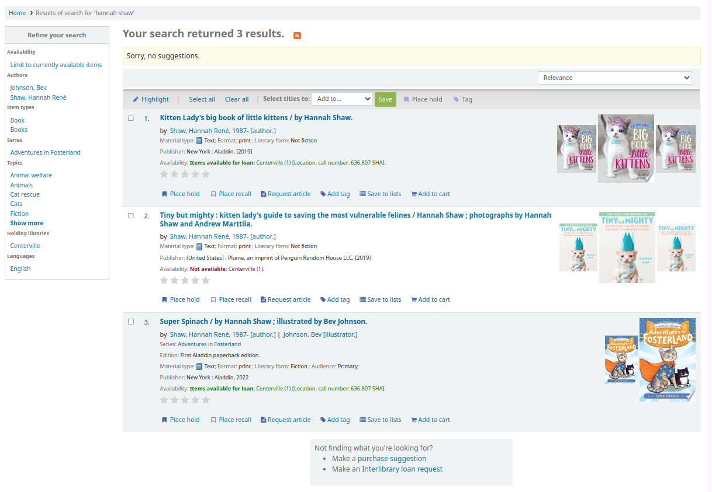
After performing a search, the number of results found for the search will appear above the results.
By default, the search results are sorted based on the OPACdefaultSortField and OPACdefaultSortOrder system preference values. To change the sort order of these results, you can choose another sorting method from the drop-down menu on the right.
Under each title in the results list, there will be a series of values from the record’s leader (field 000).
备注
These values have nothing to do with the item types or collection codes you have applied to your records or items. This data is all pulled from the record’s control fields.
This can be turned on or off with the DisplayOPACiconsXSLT system preference.
Below each title, there will be the availability for the items attached to the record.
备注
Even if you filtered on one library location, all locations that hold the item will appear on the search results.
警告
An item’s hold status does not affect whether or not the item is ‘available’ until the item is in ‘waiting’ status. Items with on-shelf holds will show as available until a staff member has pulled them from the shelf and checked the item in make it show ‘waiting’.
If any enhanced content system preferences are turned on, there may be cover images next to the search results.
If Did you mean? options are set, there will be a yellow bar across the top of your results will other related searches.

在進階搜尋的結果清單下，可選擇回到上次的進階搜尋，再編輯該次的進階搜尋。
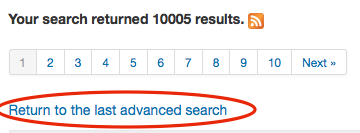
篩選器
勾選螢幕左方搜尋結果下方的 ‘縮小您的搜尋’ 選單，就能篩選搜尋的結果

Depending on your setting for the DisplayLibraryFacets system preference you will see filters for your home, holding or both libraries.
按下其中一個層面後，可按該層面右方的小 ‘x’ 從結果中移除篩選器。

搜尋 RSS feeds
點選搜尋結果數量旁的 RSS 圖示即可訂閱您的搜尋結果。詳情請查看 :ref:`此教學影片 <http://www.youtube.com/watch?v=0klgLsSxGsU>`__。
以 RSS 方式訂閱搜尋結果，將允許您看到有興趣的新增館藏。
書目紀錄
按搜尋結果的題名，進入該書目記錄的詳情。此頁面分為幾個區塊。
螢幕最上方是題名及其 GMD：

在題名之下列出著者。它們來自書目記錄的欄位 1xx 與 7xx。按作者連結則搜尋該著者的其他題名。

使用權威記錄檔案時，在著者 (及其他) 權威旁會出現一個放大鏡。按該放大鏡可直接開啟權威記錄。

If you have your DisplayOPACiconsXSLT preference set to ‘show’ you will see a material type that is determined by values in your fixed fields (learn more in the XSLT material type icons cataloging guide.

接著可看到檢視記錄的說明：
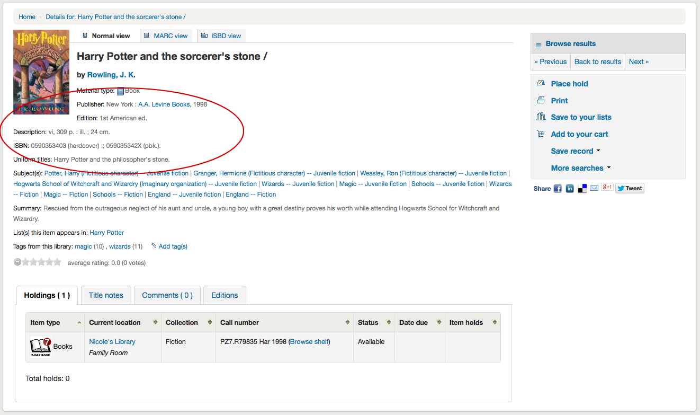
接著是主題標目的資訊，按下後搜尋類似主題的其他題名

若紀錄有目次或摘要，將顯示在 ‘摘要’ 或 ‘目次’ 標籤旁

856 欄位的資料將顯示在 ‘線上資源’ 標籤的右方連結

若檢視的題名已經在公共虛擬書架內，則在 ‘列出收錄此館藏的虛擬書架’ 標籤右方可看到該虛擬書架的名稱，若已有標籤也顯示在 ‘此圖書館的標籤’ 之下
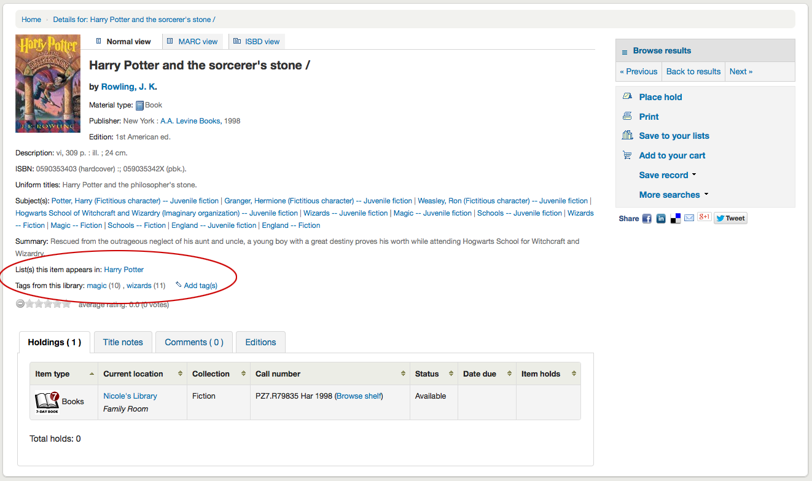
在分頁的詳情下可找到館藏資料
說明
您可以在管理模組的 ‘Table settings’ 部份, 在OPAC項目中自定義此表的列（table id：holdingst）。
編目時加入的附註 (5xx欄位) 都出現在 ‘題名附註’ 分頁下

如果書目記錄鏈接到 Serials 模塊 中的訂閱時，則會有一個帶有訂閱和發行訊息的“訂閱”選項頁籤。
备注
您可以在管理模組的 :ref:`’欄組態’<column-settings-label>`部份, 自定義此表的列(table id: subscriptionst)。
备注
If you chose a notice in the ‘Patron notification’ field when adding the subscription, there will be a button patrons can click to be notified by email when a new issue is received.
若允許讀者評論則該等評論將出現在下個分頁

If the OPACAuthorIdentifiers system preference is turned on, and that your author authority records have standard identifiers, there will be an ‘Author identifiers’ tab showing the identifiers with links to the author record on the source website.

若已啟用 FRBR 則同名的其他版本館藏將出現在 ‘版本’ 分頁。

在詳情頁面右方有一些盒子。第一個盒子是協助瀏覽搜尋結果的鈕。可看到前一筆或後一筆的結果。

按上方右欄的 ‘瀏覽結果’，將在詳情頁面打開搜尋結果
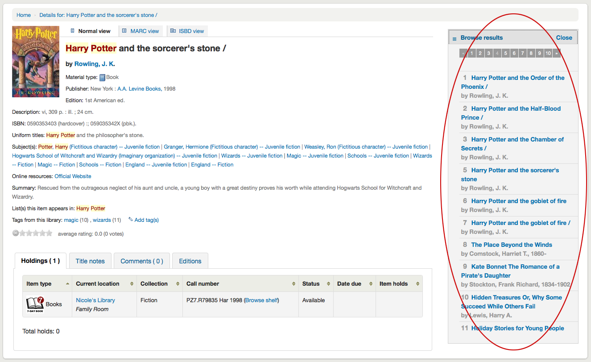
在搜尋按鈕下您將找到預留的連結, 列印記錄, 儲存紀錄到您的清單上,添加它到您的購物車或是發送到一個裝置(使用一個QR code).
Another option that will appear on this right hand side bar, if a library is allowing purchase suggestions (see the suggestion system preference), is the ability to ‘Suggest for Purchase’. Clicking this link will bring the user to the purchase suggestion form to fill out.
Clicking ‘More searches’ will show the list of libraries you entered in your OPACSearchForTitleIn preference

Under the ‘Save record’ label you will find a series of file formats you can save the record as. This list can be customized by altering the OpacExportOptions system preference.

任何時候都可以按紀錄上方的分頁鈕，改變檢視書目記錄從 ‘基本檢視’ 轉為 MARC 或 ISBD

Reporting concerns about bibliographic records
If the OpacCatalogConcerns system preference is enabled, patrons will be able to report concerns regarding specific bibliographic records.
This is similar to the problem report feature but is linked to a specific bibliographic record, and there is the possibility to have a resolution.
To report a new concern,
In the bibliographic record’s detail page, click the ‘Report a concern’ link in the options at the right side.
备注
Patrons must be logged in to report a concern. If they are not logged in, the system will ask them for their login information.
Fill in the concern form.
Title: enter a title describing succinctly the problem.
Please describe your concern: enter details about the problem, being the more descriptive possible so that the staff member who receives this is able to replicate and see the problem.
An example of what is expected in the description is provided in the field:
**Describe the concern** A clear and concise description of what the concern is. **To Reproduce** Steps to reproduce the behavior: 1. Go to '...' 2. Click on '....' 3. Scroll down to '....' 4. See error **Expected behavior** A clear and concise description of what you expected to happen.
备注
This text is customizable in the HTML customizations tool, by changing the ‘CatalogConcernTemplate’ entry.
The text at the bottom of the form (“Please describe your concern clearly…”) is also customizable in the HTML customizations tool, by changing the ‘CatalogConcernHelp’ entry.
Click ‘Submit’.
This will send an email to the cataloging team to notify them that a new concern has been created. The email will be sent to the email address in the CatalogerEmails system preference. The email sent is the TICKET_NOTIFY notice, which can be customized in the Notices and slips tool.
An email will also be sent to the reporter to notify them that the concern has been received. The email sent is the TICKET_ACKNOWLEDGE notice, which can be customized in the Notices and slips tool.
Concerns reported about this record are visible in the ‘Concerns’ tab.
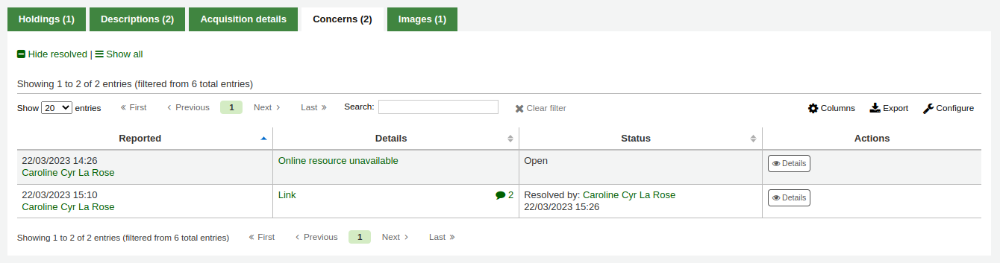
All concern tickets will be visible in the catalog concerns report.
Newly opened concern reports will also appear in the notification section at the bottom of the staff interface main page.
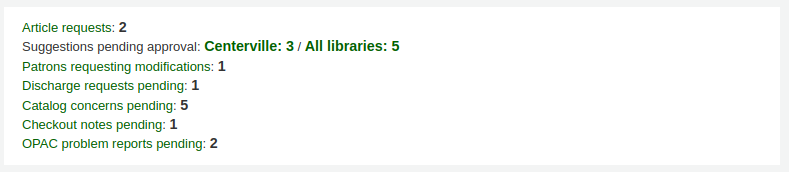
虛擬書架與書目清單
A cart is a temporary holding place for records you’re interested in finding during this session. That means that once you log out of the OPAC or close the browser you lose the items in your cart.
A list is a more permanent location for saving items.
To learn more about lists, check the Lists and cart chapter of this manual, which deal with these features in the staff interface.
虛擬書架
Patrons can manage their own private lists by visiting the ‘Lists’ section of their account.
新增虛擬書架
To create a list the patron simply needs to click the ‘New list’ link and populate the form that appears.
List name: the patron must enter a list name, it is the only required field
Sort this list by: the patron can choose how they want the list sorted (by title, author, publication year, call number or date added to the list).
Category: the patron can choose to keep this list private or make it public. A public list will be visible to all OPAC users.
备注
This field will only appear if the OpacAllowPublicListCreation system preference is set to ‘Allow’. Otherwise all lists created by patrons will be private.
Allow changes to content from: the patron can choose who will be able to add or remove titles from the list.
Nobody: nobody, including the patron themselves will be able to add or remove titles.
Owner only: only the patron who created the list will be able to add or remove titles. If the list is public or shared, the OPAC users or sharers will not be able to change the list contents.
Anyone seeing this list: everyone who has access to the list will be able to add or remove titles. If the list is public, this means everyone. If the list is private, only the owner will have the ability to change the contents. And if the list is shared, the owner and sharers will have this ability.
Staff only: this option will only appear to staff members, to make the list editable by all staff members.
從搜尋結果的 ‘新增至’ 選單裡的 ‘新增虛擬書架’ 選項，就可以新增虛擬書架
新增題名至虛擬書架
Titles can be added to lists from the search results or from the bibliographic record.
In the search results, the option to add items to the list appear below each result (‘Save to lists’ button)
and across the top of the results page, next to ‘Select titles to: Add to…’
按選定單筆書目後，按 ‘儲存至虛擬書架’ 選項，再選擇虛擬書架名稱，就完成新增書目的工作。也可勾選多筆書目記錄左方的方格，再從螢莫上方的 ‘同時新增’ 選單裡選擇虛擬書架，完成新增多筆書目的工作。
From the bibliographic record, the option to save the title to a list is in the menu on the right.

Titles can also be added to a list from the cart.
檢視虛擬書架內容
按 ‘虛擬書架’ 名稱下的虛擬書架鈕，即可檢視虛擬書架的內容。
虛擬書架的內容有點像是搜尋結果頁面，祗是上方的選單略有不同。
在虛擬書架右側有個 RSS 圖示允許您訂閱該虛擬書架的更新。
备注
The RSS icon only appears on public lists.
使用虛擬書架上方的選單可以預約多筆館藏、下載虛擬書架內容、電郵或列印該虛擬書架。
勾選清單左方的小方塊，再按選單上方的 ‘預約’ 連結完成預約工作
按上方的 ‘下載虛擬書架’ 連結，再指定下載的格式，就能下載該筆虛擬書架
按 ‘送出虛擬書架’ 連結並在彈出表單裡鍵入電子郵件，就能把虛擬書架內容送出去
备注
The message sent when emailing the list is LIST, which can be customized in the Notices and slips tool.
按 ‘列印虛擬書架’ 連結即可列印該筆虛擬書架的內容
管理虛擬書架
Once the list is saved, patrons can begin adding items to it. From the ‘Lists’ tab in their account, the patron can edit and delete the lists they have created by clicking the appropriate button to the right of the list name.
To edit the list’s title or sorting patrons click the ‘Edit’ button to the right of the list description.
按虛擬書架旁的 ‘刪除’ 連結，經過確認後就可刪除該虛擬書架。
If the OpacAllowSharingPrivateLists system preference is set to ‘Allow’, patrons will see the ‘Share’ button on the list of lists and the ‘Share list’ button at the top of each individual list. Clicking this will ask you to enter the email address of a patron.
鍵入電子郵件後，Koha 將顯示確認訊息
且送訊息給該讀者。
Once the other patron accepts the shared list, the sharing patron will receive a confirmation.
备注
The message sent to share the list is SHARE_INVITE and the message sent to the sharing patron to confirm the other patron has accepted the share is SHARE_ACCEPT. Both messages are customizable in the Notices and slips tool.
The other patron will see the shared list with their own private lists (the type will be ‘Shared’ rather than ‘Private’). They will also have the option to remove the share, if they don’t want to have access to this list anymore.
The owner of the shared list will have the option to transfer the ownership of the list to one of the patrons with whom the list is shared.
If the TagsInputOnDetail system preference is enabled, patrons will have the possibility of adding tags to titles from the list view.
借出籃
新增題名入書車
Titles can be added to the cart from the search results or from the bibliographic record.
In the search results, the option to add items to the cart appear below each result (‘Add to cart’ button)
and across the top of the results page, next to ‘Select titles to: Add to…’
Clicking the ‘Add to cart’ button under a single result will add the one title to your cart.
To add multiple titles at once, check the box to the left of each result and then choose ‘Cart’ from the ‘Add to’ pull down at the top of the screen. Once titles are added to the cart you will be presented with a confirmation at the top of the page.
從搜尋結果可以看到被加入書車的館藏，按 ‘(移除)’ 鈕就能從書車中移除。
From the bibliographic record, the option to add the title to the cart is in the menu on the right.
管理書車
Once there are titles in the cart, you can manage the contents by clicking on the ‘Cart’ button usually found at the top of the screen. Your cart will open in a new window.
在此視窗有若干選項。書車上方有若干選擇鈕。
More details: clicking this will show additional information about the titles in the cart (ISBNs, subjects, publisher info, notes and more).
When clicked, tThe ‘More details’ button will become ‘Brief display’. Clicking this will return to the default display in table form of the title, author, copyright date and item location and status.
Send: the option to send the contents of the cart to an email address. This is handy if you want to send the resources you found at the library to your home email account to refer to later or to send to a patron researching a specific topic. Clicking this link will open up a new window that asks for the email address and message to send.
警告
The cart can only be emailed by logged in users. This will prevent the cart email function from being used for spamming.
备注
The message sent when emailing the cart is CART, which can be customized in the Notices and slips tool.
Download: you can download the contents of the cart in several pre-defined formats or using a CSV profile that you defined in the tools module.
Empty and close: this will empty the cart and close the window.
Hide window: this will close the window, but the cart will not be emptied.
Print: this will print out the contents of the cart.
In addition to the various different ways to save the contents of the cart, there are ways to add value to the data in your cart.
Select one or more titles from the cart and choose one of the options:
Remove: this will remove the selected titles from the cart.
Add to a list: this will add the selected titles to a list
Place hold: this will place a hold on all selected titles
Tag: if the TagsInputOnDetail system preference is enabled, patrons will be able to add tags to selected titles.
預約
Patrons can place holds on items via the OPAC if they’re logged in and you have the OPACHoldRequests preference set to ‘Allow’. If the item can be placed on hold the option to place it on hold will appear in several different places.
檢視虛擬書架或在搜尋結果頁面，勾選書目記錄左方的方格，按上方的 ‘預約’ 鈕，就能預約該筆館藏
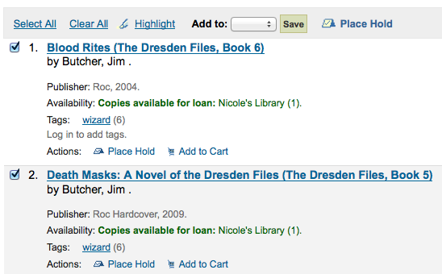
檢視虛擬書架或在搜尋結果頁面，在每筆館藏的基本資料下都有預約選項
檢視個別書目時，在螢幕的右方有個區塊，包括預約連結

不論以何種連結進入預約，都會進入同個預約畫面。

按館藏左方的方格就可預約該館藏
題名包括連結回紀錄的詳情頁面
順位顯示預約佇列中此預約位置
If allowed by your OPACAllowUserToChooseBranch preference the patron can choose where they’d like to pick up their hold. The list of available pickup locations will include all libraries that have ‘Pickup location’ set to ‘Yes’ on the library configuration page.
按 ‘顯示更多選項’，就能看到更多選項
更多選項裡的預約表單
If you have the AllowHoldItemTypeSelection preference set to ‘Allow’ and the record had more than one item type attached you will see an option to choose to limit the hold to a specific item type
If allowed by your OPACAllowHoldDateInFuture preference, the ‘Hold starts on date’ column will show. This field allows the patron to have their hold start on a future date.
預約的效力一直留在系統內，但讀者可以在 ‘此日期後取消預約’ 欄位內鍵入日期事先指定取消預約的日期。
重要
取消預約的工作由 Expired Holds 工作排程 執行，此排程需由系統管理者設定才會自動執行
If allowed by the OpacHoldNotes preference then patrons can leave notes about their holds for the library by clicking the ‘Edit notes’ button

If the EnableItemGroupHolds system preference is set to ‘Enable’ and the record has item groups, the patron can choose to place a hold on the next available item of a group, rather than the next available item on the whole record or a specific item.
按照 流通與罰款規則 的設定，讀者可以在預約時指定可借的單件或特定單件。

按下預約鈕後，讀者進入其帳號頁面可看到所有預約的館藏。
要求催還
如果你的圖書館接受催還（見 :ref:`設定催還<recalls-setup-label>`了解更多訊息），讀者就可以對館藏進行催還。
要求催還的選項出現在 OPAC 的不同地方：
在搜尋後的結果列表中，’放置催還’選項出現在每個可催還結果的底部。
在詳細記錄中。 ‘地點催還’選項出現在選項中螢幕的右側（或移動視圖的底部）
這些連結中的任何一個都將指向催還表格。
領取地點：讀者可以選擇他們想領取催還館藏的地點。
之後不需要催還：如果讀者在某個日期之後不需要這個館藏，他們可以在這裡輸入它。催還將在該日期後自動過期（用 expire_recalls.pl 工作排程）。
催還下一個可用的館藏或催還一個特定的館藏：讀者可以選擇催還任何館藏或一個特定的館藏。如果他們選擇 ‘催還一個特定的館藏’，他們將被要求在列表中選擇該館藏。
Once the patron confirms their recall request, they will have get a message saying the the patron who currently has the item will be notified.
备注
The notice sent to the patron who currently has the item is RETURN_RECALLED_ITEM. It can be edited in the Notices and slips tool.
The request will be added to the recalls tab in their account summary, as well as in their recall history list.
強化內容
標籤
Depending on the settings for the TagsEnabled, TagsInputOnList and TagsInputOnDetail system preferences, patrons may be able to add tags to bibliographic records from the search results and/or from the bibliographic records’ detail page.
If you are allowing patrons to add tags from the search results list (see TagsInputOnDetail), patron will see an ‘Add tag’ button below each result and a ‘Tag’ option at the top of the screen.
To add a tag to one item, click ‘Add tag’, type the tag or tags (separated by commas) in the ‘New tag’ box and click ‘Add’. You will be presented with a confirmation of your tags being added.
按搜尋結果頁面的左上方的 ‘標籤’ 鈕，可對多個館藏新增標籤。按鈕之後，改變輸入盒供新增標籤給所有選定的館藏。
If the TagsInputOnDetail system preference is enabled, patrons will also have the possibility to add tags from a list and from the cart.
If the TagsInputOnDetail system preference is enabled, patrons will have the possibility of adding tags from the record detail page by clicking the ‘Add tag(s)’ link. The link will be replaced by an input box.
Emojis can also be included using the emoji picker when adding tags from the record detail page.
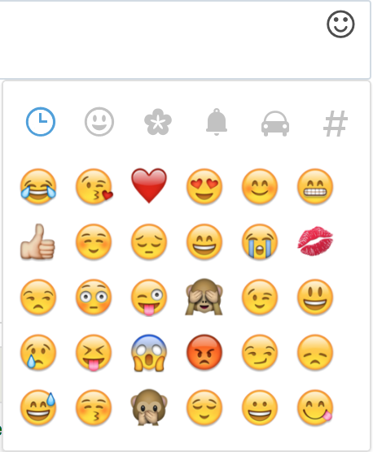
Zotero
Zotero 是 Firefox 的外掛程式，藉以儲存與產生書目。下載與詳情見官網 http://zotero.org。
安裝 Zoteor 後，從 Koha OPAC 的搜尋結果，在 URL 右方看到一個 Zotero 的圖示。按下該圖示開啟題名清單，由此加入 Zotero。

選擇題名，再按 ‘OK’ 鈕。就能加入 Zotero。打開 Zotero 可看到新加入的書目。

客製化 RSS Feeds
使用 RSS 送出工作排程 就能產生供 SQL 使用的 RSS (譬如新增採訪 RSS 送出)。工作排程依 RSS XML 文件要求的命令執行。
輸出的文件應置於近用 OPAC (或館員介面) 的網頁，使用者才能下載 RSS 摘要。
使用的範例在這裡：misc/cronjobs/rss.pl lastAcquired.conf
通常定期 (每天) 執行 rss.pl 更新其內容。
組態檔 (如：lastAcquired.conf) 清單
使用的模板檔名
匯出檔案的路徑
SQL 查詢
rss.pl 執行 SQL 查詢，然後經由暫存送出查詢結果的檔案。
重要
必須先打開 RSS 工作排程 才能夠客製化 RSS 送出。
OPAC 自助註冊
If you allow it, patrons can register for their own accounts via the OPAC. If you have the PatronSelfRegistration preference set to ‘Allow’ then patrons will see a link to register below the log in box.

When the patron clicks the ‘Register here’ link they will be brought to a registration page. The options on the registration page can be controlled by editing the PatronSelfRegistrationBorrowerMandatoryField and the PatronSelfRegistrationBorrowerUnwantedField preferences.

Once the patron has submitted their registration they will either be sent an email to confirm their account (if you have the PatronSelfRegistrationVerifyByEmail preference to require this) or presented with their new username and password. If the PatronSelfRegistrationPrefillForm system preference is set to ‘Show and prefill’, they will be presented with the prefilled login form.

To be notified when a patron registers via the OPAC, use the EmailPatronRegistrations system preference.
自助註冊的讀者還沒有圖書館發給的讀者號，但已可立馬使用 OPAC 的所有功能。因此，建議您：
set up a provisional patron category for self registered patrons (such as ‘Self Registered) instead of using an existing patron category and set that value in the PatronSelfRegistrationDefaultCategory preference
give this patron category minimal circulation privileges in the circulation and fines rules (such as allowing a couple holds, but no check outs)
如此一來，讀者必須親自到館確認其身份，給予讀者證號碼，擁有借出的權限。館員更改其類型，給予身份 (成年人、居民、非居民、學生等) 並讀者證號碼。
我的帳號
If the opacuserlogin system preference is set to ‘Allow’, patrons can log in and access their account.
登入後，讀者將被帶到他們的 帳號匯總。
If patrons access the home page while logged in, and OPACUserSummary is set to ‘Show’, they will see a small summary of their account instead of the login fields.
If OPACShowSavings is set to display savings in the summary box, this summary section will also contain the savings the patron made by using the library rather than purchasing the items.

在 OPAC 的任何頁面上，單擊頁面右上角的姓名，都會將訂閱會員帶回他們的帳戶。
重設密碼
If you have the OpacResetPassword system preference set to ‘Allow’, patrons can reset their password by clicking the ‘Forgot your password?’ link found under the login box.
點擊後，他們將看到一個表格，要求他們提供使用者名稱和電子郵件地址。

警告
讀者**必須**有一個電子郵件地址用於重置密碼。 如果他們的文件中沒有電子郵件地址，他們將收到一條錯誤消息

系統發送電子郵件，指示讀者重設密碼。

電子郵件的內容可以使用 通知和單據工具 進行自定義。 信件密碼為密碼_重設。
If the NotifyPasswordChange system preference is enabled, the patron will receive a notification indicating their password was changed.
The content of that email can be customized with the Notices and slips tool. The code of the letter is PASSWORD_CHANGE.
我的摘要
在 ‘你的摘要’ 標籤中，讀者將看到他們所借出的所有館藏，其中逾期的館藏以紅色標示。
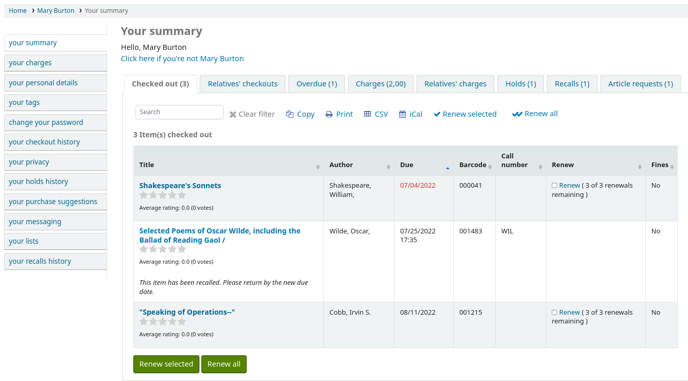
OPAC messages and OPAC notes will be displayed at the top of this page. For OPAC messages, the patron will have the option to dismiss the message. This will hide the message from their OPAC account and mark it as read, but it will not delete the message.

You can add content to this page with the OpacMySummaryNote HTML customization location. Content added there will appear above the patron’s summary and below the welcome message.

If OPACShowSavings is set to display savings in the ‘your summary’ page, this section will also contain the savings the patron made by using the library rather than purchasing the items.

If OpacRenewalAllowed set to ‘Allow’, patrons will be able to renew their checkouts from the OPAC.
If the patron has pending charges exceeding the value set in OPACFineNoRenewals, a note will display explaining that renewals cannot be made.
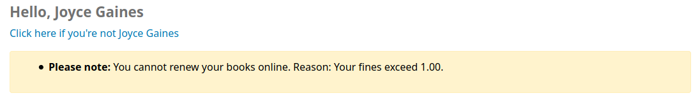
A note will display if the patron cannot place holds due to their charges exceeding the value set in the maxoutstanding system preference.
If AllowPatronToControlAutoRenewal is set to ‘Allow patrons’, patrons will be able to choose whether or not they want their checkouts to be renewed automatically. If they choose ‘Yes’, items for which automatic renewal is enabled in the circulation rules will renew as expected. If they choose ‘No’, the automatic renewals that would have applied to this patron’s checkouts will not take place.

If you have HTML entered in the OPACMySummaryHTML preference then you will see that to the right of the ‘Fines’ column.
小技巧
By default, the barcode is not displayed in the patron’s checkout table on the OPAC. If your patrons would like to see the items barcodes on their list of checked out items you can set up a patron attribute with the value of SHOW_BCODE and authorized value of YES_NO.

Then, on the patron’s record set the value for SHOW_BCODE to ‘Yes’.
This will add a column to the checkout summary in the OPAC that shows the patron the barcodes of the items they have checked out.
If you would like your patrons to leave a note on an item they have checked out AllowCheckoutNotes preference must be set to allow.
In the patron’s summary of checkouts, there will be an added column to allow the patron to leave a note (for example: missing first page, or DVD is scratched).
When the patron clicks on ‘Add note’, they will be able to write a note about this checkout.
Staff will be able to see and manage checkout notes from the staff interface.
If their guarantee has allowed it via their privacy, or alternatively, if the staff is allowed to change this privacy setting in the staff interface with the AllowStaffToSetCheckoutsVisibilityForGuarantor system preference and this setting is turned on, when the guarantor logs in they will see a tab labeled “Relatives’ checkouts” on their summary tab.

按 ‘逾期’ 分頁將祗顯示逾期的館藏。
The ‘Fines’ tab will show just a total of what the patron owes. Clicking on the total will take them to the ‘your fines’ tab where they will see a complete breakdown of their fines and bills. If you don’t charge fines at your library you can turn the display of these tabs off by setting the OPACFinesTab preference to ‘Don’t allow.’
If their guarantee has allowed it via their privacy, or alternatively, if the staff is allowed to change this privacy setting in the staff interface with the AllowStaffToSetFinesVisibilityForGuarantor system preference and this setting is turned on, when the guarantor logs in they will see a tab labeled “Relatives’ charges” on their summary tab.
‘預約’ 分頁顯示讀者所有的預約館藏。
Depending on the value of the SuspendHoldsOpac system preference, patrons can suspend their own holds if they are not in transit or already waiting for them. When they click ‘Suspend’ they will be presented with the option to choose a date for their hold to resume.
也可以無限期地延遲預約，或從頁面下方指定延遲至指定日期。
备注
If the AutoResumeSuspendedHolds system preference is set to “Don’t allow”, patrons will not have the option to put an end date on the hold suspension.
From this tab, patrons can also cancel holds. Depending on the waiting hold cancellation policy, they may also be able to cancel holds that are already waiting for them.
Depending on the value of the OPACAllowUserToChangeBranch system preference, the patron may be able to change the pickup library of holds. When one or more status is selected in the system preference, a ‘Change’ link will appear under the current pickup library’s name for holds that have that status.
When the patron clicks on the ‘Change’ link, there is a pop-up with a selection of libraries that allow hold pickups.
如果你的圖書館 允許催還，讀者可以在’催還’標籤中看到他們要求的催還和它們的各種狀態。
讀者可以通過點擊’取消’按鈕來取消催還，前提是它還沒有等待被領取。
讀者旗標
If you have flagged your patron’s account they may see one of the following error messages at the top of their account.
借書證被通報遺失

請更新地址
說明
this error message will not include a link to the update form if you have OPACPatronDetails set to ‘Don’t allow’
讀者權限被限制
您的罰款
若有罰款下個分頁就是 ‘我的罰款’。開啟後顯示所有的罰款記錄。

若已設定 EnablePayPalOpacPayments 偏好，允許讀者以 PayPal 支付罰款，則在待付罰款左方將出現勾選盒。
在最下方，讀者可看到以 PayPal 支付館藏的勾選內容。

付款後將出現確認訊息
在館員端可看到已使用 PayPal 支付罰款。

您的個人詳情
If you have your OPACPatronDetails preference set to ‘Allow’, your patrons will see a form filled in with their contacting information by clicking on the ‘Your personal details’ tab. You can control what fields patrons see and can modify via the OPAC by setting the PatronSelfModificationBorrowerUnwantedField and PatronSelfModificationMandatoryField preferences.
讀者可從這個表單編輯詳情，再按最下方的 ‘送出改變’ 把修改的結果送交館員審核。館員可在頁面下方看到所有需要審核的資料。
If the OPACPatronDetails preference is set to ‘Don’t allow’ then patrons will simply see their details and a message stating that they should contact the library for changes.
您的標籤
If your library has TagsEnabled set to ‘Allow’ then the next tab on the left will be ‘your tags’. This tab will show patrons all of the tags in the system as a cloud and then all of the tags they have applied in a list format. From here patrons have the ability to remove tags that they have added if they want.

改變您的密碼
Next, if you have OpacPasswordChange set to ‘Allow’ the next tab will be ‘change your password,’ where patrons can change their password for logging into the OPAC. Patrons will be presented with a standard form asking them to enter their old password and then their new password twice.

If the NotifyPasswordChange system preference is enabled, the patron will receive a notification indicating their password was changed.
The content of this email can be customized with the Notices and slips tool. The code of the letter is PASSWORD_CHANGE.
您的搜尋紀錄
If you have your EnableOpacSearchHistory preference set to ‘Keep’ then your patrons can access their search history via the ‘your search history’ tab.

搜尋記錄是讀者在 OPAC 的搜尋過程。按任何一個搜尋就重新執行一遍。任何時間讀者可以按分頁上方的 ‘刪除您的搜尋記錄’ 連結或在 OPAC 右上角的紅色 ‘x’，刪除其內容。

Checkout history
If the opacreadinghistory system preference is set to ‘Allow’, patrons will have access to the ‘Checkout history’ tab. This will show the patron their entire borrowing history, unless they have asked the library to not keep that information via the ‘Privacy’ tab.
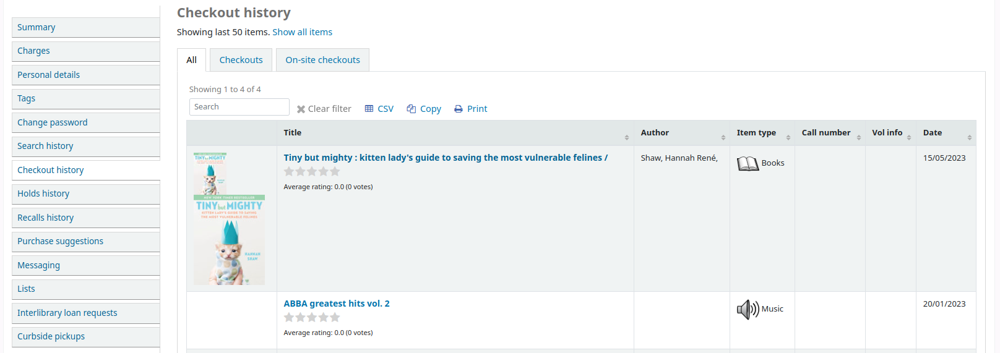
If OPACShowSavings is set to display savings in the ‘your summary’ page, this section will also contain the savings the patron made by using the library rather than purchasing the items.
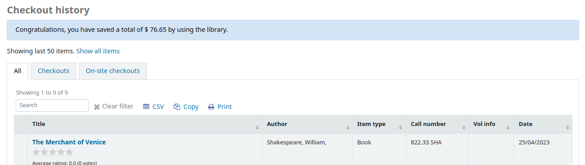
您的隱私
The ‘your privacy’ tab will appear if you have both the opacreadinghistory and the OPACPrivacy preferences set to ‘Allow.’ This tab will allow the patrons to decide how the library keeps their circulation history data.
讀者有三個選項：
永久有效：永久保留您的閱讀記錄。這是讀者自己的選擇。
預設：依法保留您的借出記錄。這是預設選項：圖書館依法保留相當期間的借出記錄。
絕不：立即刪除我的閱讀記錄。將在還入時，刪除所有借出與還入的記錄。
館員介面的 ‘我的閱讀紀錄’ 分頁與 ‘流通紀錄’ 分頁，都依讀者的建議而改變。
不論選擇何種隱私規則，都可以點選 ‘立即刪除’ 鈕，批次刪除所有的閱讀紀錄。

按此鈕不會刪除借出中的館藏，但將清除讀者的閱讀紀錄。
重要
In order for the patron to be able to delete their reading history you must have the AnonymousPatron preference set.
If you’re allowing guarantees to grand permission to their guarantors to view their current checkouts with the AllowPatronToSetCheckoutsVisibilityForGuarantor preference they will see that option on this screen.
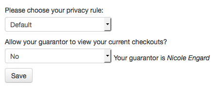
保證人登入後，在其摘要分頁有個分頁標示為 “親屬借出”。
您的預約記錄
If the OPACHoldsHistory system preference is set to ‘Allow’, patrons will be able to see all their current and past holds.

您的採訪建議
If your library allows patrons to make purchase suggestions the next tab will show all suggestions that the patron made to the library and their statuses. To disable this tab and the suggestion functionality set the suggestion preference to ‘Don’t allow.’

If you have OPACViewOthersSuggestions set to ‘Show’ then patrons will be able to search suggestions from the top of this list.
Messaging
If your library has the EnhancedMessagingPreferences and the EnhancedMessagingPreferencesOPAC preferences set to ‘Allow’ then your patrons will be able to choose which messages they receive from the library (with the exception of overdue notices which the library controls).
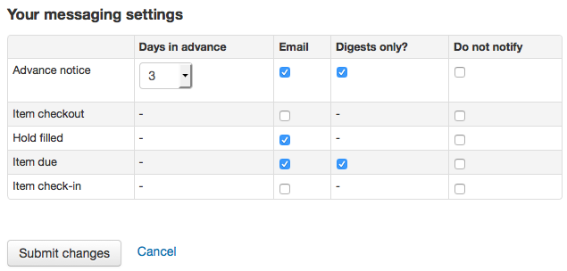
If you use an outside driver for sending text messages set with the SMSSendDriver preference, you will see an additional column to receive these messages as SMS (or text messages) and a field for a cell (or SMS) number.

If you are using the Email protocol for sending text messages set with the SMSSendDriver preference, you will see an additional column to receive these messages as SMS (or text messages), a field for a cell (or SMS) number, and a pull down listing cellular providers entered in administration.

If you are using the i-tiva Talking Tech service you will see an additional column to receive these messages via Phone.
這些通知是：
提早通知：用於通知讀者其借出的館藏即將到期 (讀者可指定提前的天數)
借出館藏：通知讀者剛借出或續借的館藏，就是電子版的借出收條
預約可取：讀者預約書籍已在館可取
到期通知：館藏到期當天的通知
還入館藏：讀者剛還入的館藏清單
备注
This notice can be customized by editing the CHECKIN notice in the Notices and slips tool.
借出館藏：通知讀者剛借出或續借的館藏，就是電子版的借出收條
备注
This notice can be customized by editing the CHECKOUT notice in the Notices and slips tool.
Auto renewal: A notice that notifies the patron that their checkouts have been automatically renewed, or if there was a problem with their automatic renewal.
备注
This notice can be customized by editing the AUTO_RENEWAL or AUTO_RENEWAL_DGST notices in the Notices and slips tool.
This option will only appear if the AutoRenewalNotices is set to “according to patrons messaging preferences”.
按 ‘祗有摘要?’ 盒後讀者就祗接收摘要式通知。把所有此類型 (3 天內到期的資訊置於一個電子郵件) 的訊息納入一個電子郵件寄出。
If the TranslateNotices preference is set to Allow the patron will also see an option to choose ‘Preferred language for notices’ with a dropdown list of available languages.
重要
詢問 ‘祗要摘要嗎？’ 同時須選擇傳送方式 (SMS 或電子郵件或電話)，讀者才能收到該摘要的訊息。
虛擬書架
If the virtualshelves system preference is set to ‘Allow’, patron will see a ‘Lists’ tab.
From here, patrons can view public lists and create or edit their own private lists.
要求離館
If the useDischarge system preference is enabled, patrons will be able to request a discharge via the OPAC. A discharge is a certificate that says the patron has no current checkouts and no holds.
Patrons can request a discharge from the library by going to the ‘Ask for discharge’ tab in their online account.
From here they can request a discharge by clicking the ‘Ask for a discharge’ button. They will receive a confirmation of their request.
Once the discharge is approved by library staff, the patron will see a download link to download a PDF of their discharge.
您的傳閱清單
如果您被指定為任何:ref:`serial routing lists <create-a-routing-list-label>`您將會看見他們被列在這裡. 顯示以下說明”您已訂閱以下連續性標題的傳閱清單. 如果您想改變, 請聯繫圖書館”.
您的館際互借請求
If your library has the ILLModule preference set to ‘Enable’ patrons will have the option to make ILL requests when logged in to their OPAC account. From here they can view their existing requests and place new ones.
提出一個新的館際互借請求請點擊‘創建一個新的請求’和選擇請求的類型.

說明
The options displayed are dependent on your ILL configuration. See the ILL backends wiki page at https://wiki.koha-community.org/wiki/ILL_backends further explanation.
說明
If you have entered copyright text in the ILLModuleCopyrightClearance preference the text displays here and you need to click ‘Yes’ to accept before continuing.
Complete the publication details as fully as possible. Depending on the form in use you may see the option to add Custom fields for additional information such as notes. Destination branch is a required field, this is the branch you would like the request to be sent to.

點擊’創建’提交您的請求給圖書館進行處理.
Your submitted request will be listed with a status of ‘New request’. Once processed the status will be updated to ‘Requested’.
點擊‘查看’來改變或是取消您的請求.
You cannot edit the form details but you can add a note to request a modification and then click on ‘Submit modifications’ at the bottom of the screen. Your modification will be sent to the library for processing.
备注
When a patron modifies an inter-library loan request, an email is sent to library staff so that they can view the changes from the ILL module.
The email sent is based on the ILL_REQUEST_MODIFIED template. It can be customized in the Notices and slips tool.
對於新的請求您也可以選擇‘取消請求’. 您的請求狀態將會被更新成‘取消請求’之後就會被圖書館員移除.
备注
When a patron cancels an inter-library loan request, an email is sent to library staff so that they can cancel it from the ILL module.
The email sent is based on the ILL_REQUEST_CANCEL template. It can be customized in the Notices and slips tool.
您的催還記錄
如果你的圖書館 允許催還，讀者可以在’你的催還曆史’標籤中看到他們過去和現在申請的所有催還，以及他們的各種狀態。
讀者可以通過點擊’取消’按鈕來取消催還，前提是它還沒有等待被領取。
Curbside pickups
If your library offers curbside pickup, the patron will be able to see their scheduled pickups under ‘Curbside pickups’.
The patron has the option to indicate that they are outside the library by clicking ‘Alert staff of your arrival’.
The patron also has the option to cancel their scheduled pickup with the ‘Cancel this pickup’ button.
If the ‘Patron-scheduled pickup’ setting is turned on in the curbside pickup configuration, the patron will be able to schedule their own curbside pickup appointment.
The patron must first choose a library at which they want to pick up their items
备注
Only libraries with curbside pickup enabled will be displayed in the drop-down menu.
Furthermore, if the ‘Enable for waiting holds only’ setting is turned on, only the libraries at which the patron has waiting holds will be enabled.
The patron must then choose a date
备注
Only dates with available time slots will be displayed.
The possible pickup times will be displayed, depending on the day of the week
备注
The number in parentheses under each time slot is the number of available appointments for that time. If the maximum number of appointments has been reached, based on the ‘Maximum patrons per interval’ setting in the curbside pickup configuration, the time slot will be greyed out and the patron will not be able to select it.
The patron can optionally add a note about their pickup
The patron must then click ‘Schedule pickup’ to save their appointment
採購建議
If your library has the suggestion preference set to ‘Allow’, patrons will have the option to make purchase suggestions in several areas in the OPAC.
If you are allowing everyone to see the purchase suggestions made by others with the OPACViewOthersSuggestions preference, there will be a link at the top of your OPAC under the search box.

讀者搜尋不著時將出現一個連結。
在書目記錄的詳細視圖中將有一個’建議購買’的選項。
在讀者帳戶中的 你的購買建議 標籤會有一個連結。

按任何一個連結將打開採訪建議表單。

表格頂部的訊息文字可以用 :ref:`HTML 自定義工具<html-customizations-label>`替換，顯示位置OpacSuggestionInstructions。
預設情況下，表單中僅需要’標題’。
Mandatory fields can be set using the OPACSuggestionMandatoryFields system preference.
The OPACSuggestionUnwantedFields system preference can be used to hide unnecessary fields.
The OPACSuggestionAutoFill system preference can be used to help patrons fill out the form using information from Google Books.
可以透過編輯建議_格式 :ref:`容許值 <authorized-values-label>`來編輯項目種類表單。
‘建議的原因 ‘列表可以通過編輯OPAC_SUG :ref:`容許值列表<authorized-values-label>`來編輯。
If the item already exists in the catalog, the patron will see a message with what Koha thinks is the corresponding title. Matches are made on the title/ author, ISBN or ISSN. If the title isn’t what the patron is trying to suggest, they can click ‘Confirm your suggestion’, to suggest it anyway.
一旦提交表單，採購建議將出現在 採訪模組 ，供圖書館員管理。
如果通過 :ref:`採訪模組<managing-purchase-suggestions-label>訂購了購買建議，讀者的購買建議標題將可以點擊，並將讀者直接帶到OPAC中的訂購記錄。
Libraries
The ‘Libraries’ page shows the contact information (address lines, city, state, zip/postal code, country, phone number, fax number, website) for libraries in the system that are set as ‘Public’.
The library name is a link to a specific page for this library. This second page also includes ‘OpacLibraryInfo’ HTML customizations for this library.
Reporting problems
If the OPACReportProblem system preference is enabled, patrons will have the option to report problems on the OPAC (broken links or inaccurate information for example).
At the bottom of each page is a ‘Report a problem’ link.
When the patron clicks on the link, they are brought to a form where they can specify what exactly is the problem.
The problem report is sent to the Koha administrator by email (to the address in KohaAdminEmailAddress), and will appear in the OPAC problem reports tool. If the library has an email address, the patron will have the choice to either send the problem report to the library or to the administrator.
备注
The notice sent by email is customizable in the Notices and slips tool. The letter code is PROBLEM_REPORT.
評論
Patrons can leave comments in the OPAC if you have the OPACComments preference set to allow this. Each bibliographic record has a comments tab below the bibliographic information.
讀者登入後可看新增評論給館藏的連結。按此連結將彈出包括其評論盒的視窗。
鍵入評論後按 ‘送出’ 鈕，讀者將看到其評論列入待決，其他讀者還看到此評論。
Once the comment is approved the patron will see the number of comments on the ‘Comments’ tab and their comment labeled amongst the other comments. If the ShowReviewerPhoto system preference is set to ‘Show’, the patron’s photo pulled from the Libravatar library will be displayed next to their comment.
Other patrons will see the comment with the name of the patron who left the comment (unless you have set the ShowReviewer preference to not show patron names).
If you have your OpacShowRecentComments set to show then you’ll see the approved comments on that page.
讀者可從此頁面以 RSS 訂閱最新的評論。